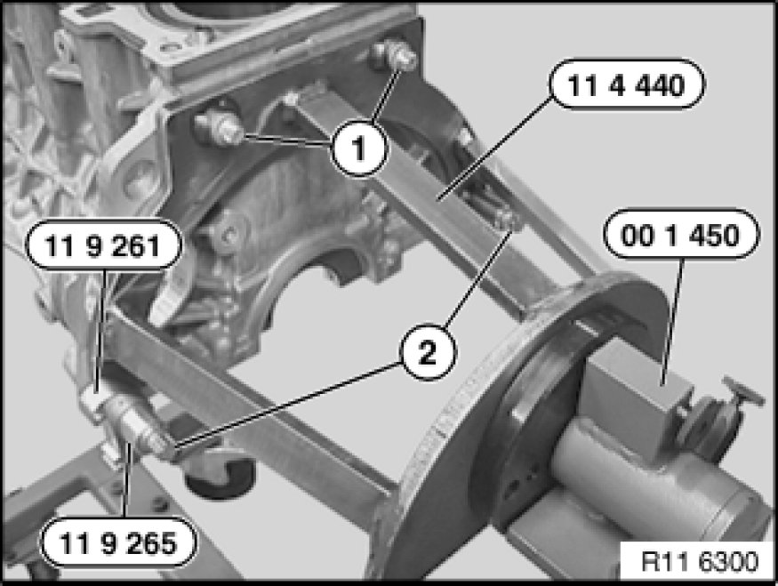

11 00 ... Mounting Engine on Assembly Stand
Mounting engine on assembly stand (N52K)

Special tools required:
- 00 1 450
- 11 3 370
- 11 4 440
- 11 9 261
- 11 9 265

Important!
Aluminium screws/bolts must be replaced each time they are released.
The end faces of aluminium screws/bolts are painted blue for the purposes of reliable identification.
Jointing torque and angle of rotation must be observed without fail (risk of damage).

Necessary preliminary tasks:
- Remove engine

Bolt engine or engine block with steel bolts (1) and aluminium bolts (2) to special tool 11 4 440.
To release central bolt, bolt on special tools 11 9 261 and 11 9 265 as well.
Mount engine with special tool 11 3 370 to special tool 00 1 450.